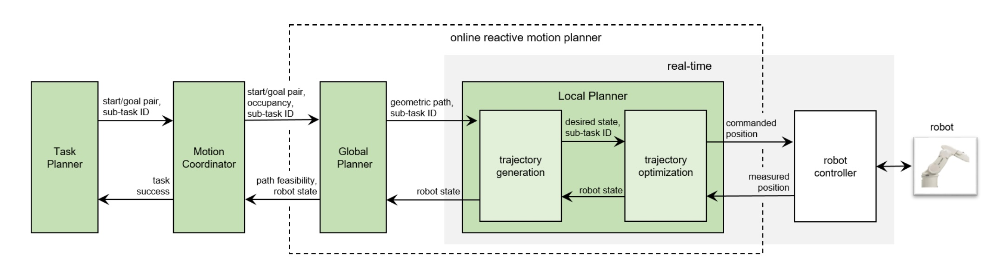
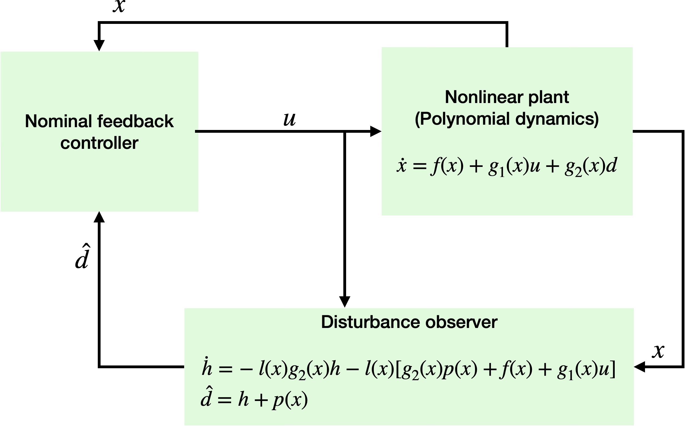
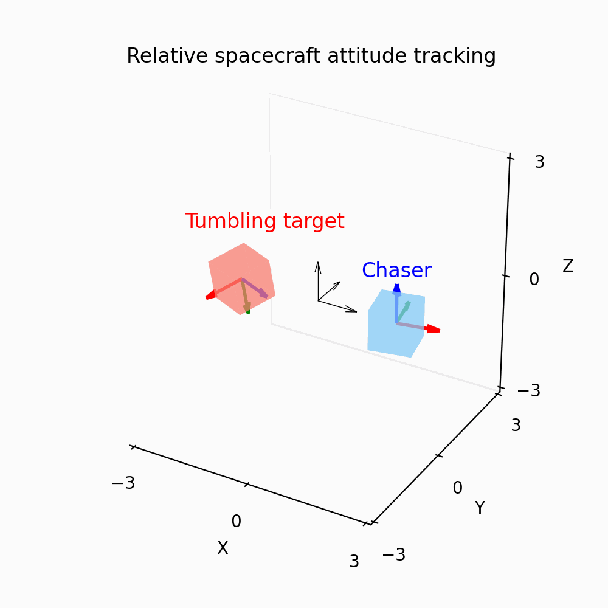
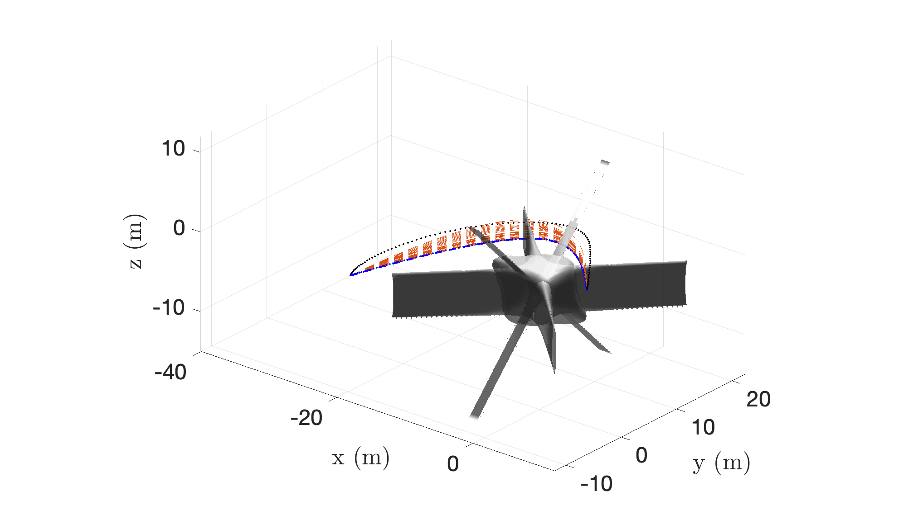
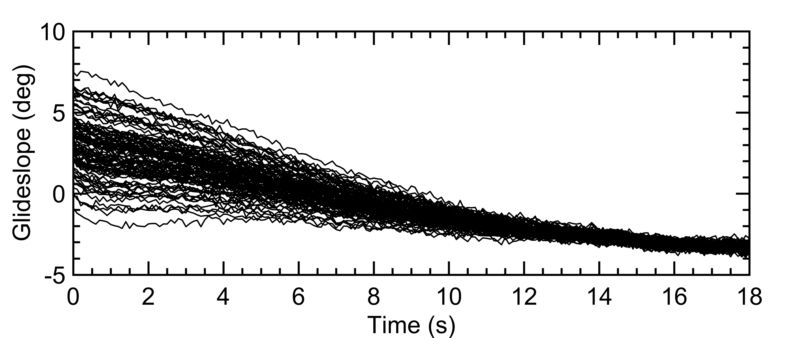
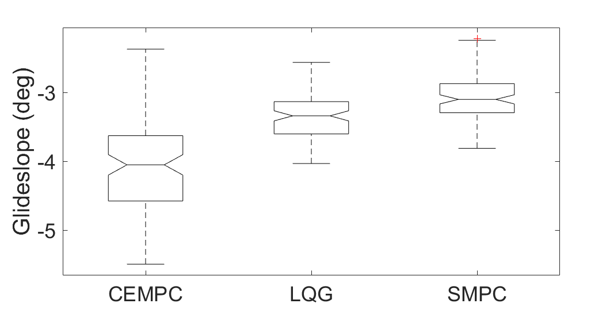
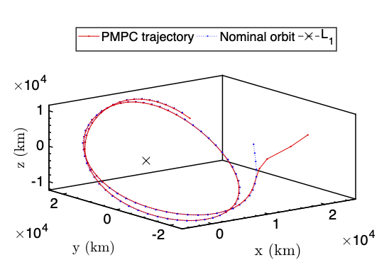
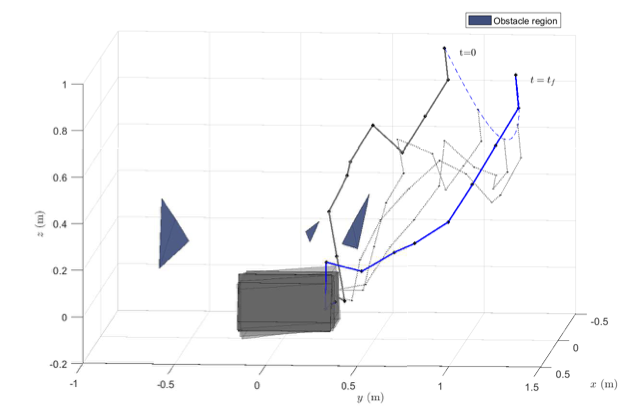

I am a Senior Robotics Researcher at Omron Research Center of America in
California, USA. I completed my Ph.D. in Mechanical and Aerospace
Engineering at
Rutgers University in 2019 under
the supervision of Prof. Xiaoli Bai.
My interests include autonomy; guidance, navigation, and control;
robotics; optimization; aerospace systems; and control theory.
Before coming to Rutgers, I received an MS in Aerospace Engineering from
New Mexico State University in 2015.
In what seems like a lifetime ago, I completed my bachelor’s thesis at the
French Space Agency (CNES) in Toulouse,
France, under Jean-Yves Prado, on asteroid hazard mitigation. I then
worked as a visiting researcher at the Institut de Mécanique Céleste et de
Calcul des Éphémérides (IMCCE), Paris
Observatory, with Dr. Florent Deleflie. I also did a summer internship at
the Institute of Space Systems, German Aerospace Center (DLR) in Bremen, Germany.
Prior to graduate studies, I spent wonderful years at
BITS-Pilani in India, where I
double-majored in Electronics & Instrumentation Engineering and Economics.
Research
My current work focuses on perception, planning, and control for robotics,
especially human-robot collaboration and multi-robot systems. During my
Ph.D., I developed convex-optimization-based methods for trajectory
planning and control, applied to space robotics and autonomous aircraft carrier
landing.
Research Highlights
Automatic task decomposition and reactive motion planning for multi-robot systems
Enabling task and sub-task decomposition based on application needs
where robot motion can/cannot be replanned on the fly. In combination with a
hybrid motion planner that uses dynamic roadmaps for global path
planning and QP-based trajectory optimizer for local planning.

Nonlinear disturbance observer for polynomial systems using sum-of-squares optimization
Disturbance observer design for polynomial systems with potentially
mismatched uncertainties posed as a Polynomial Matrix Inequality (PMI).
PMI's can be converted to sum-of-squares problems and solved efficiently
using SDP solvers. Applied to nonlinear relative spacecraft attitude
tracking problem with disturbance torques on both the chaser and
uncooperative tumbling target spacecraft (Misra & Bai, JGCD 2020).


Iteratively Feasible Spacecraft Guidance using DC Decomposition
Modeling non-convex inequality constraints in optimal control using
Difference of Convex Functions (DC) decomposition, where the decomposition is posed as a sum-of-squares optimization. Applied to Clohessy-Hill-Wiltshire (CHW)-based guidance with non-convex path constraints
with anytime feasibility under mild conditions (Misra and Bai, AIAA
Scitech 2020).

Stochastic MPC for Carrier Landing
Output-feedback stochastic MPC attenuates carrier airwake and
turbulence, achieving tight glideslope tracking in Monte Carlo trials (Misra and Bai, JGCD 2019).


Lissajous orbit station-keeping A polynomial
optimization-based MPC approach for spacecraft stationkeeping near
Lagrange points using polynomial approximation of circular restricted
three body problem dynamics (Misra, Peng & Bai, AIAA Scitech 2018).

Free-Floating Space Robot Planning
Task-constrained trajectory planning cast as a convex QP, enabling rapid
trajectory generation for a 10-DOF free-floating arm (Misra & Bai, JGCD 2017).

Some (not regularly updated) code on
GitHub. These repositories are
primarily for learning and demonstration; they are not optimized,
maintained, or intended for production use.